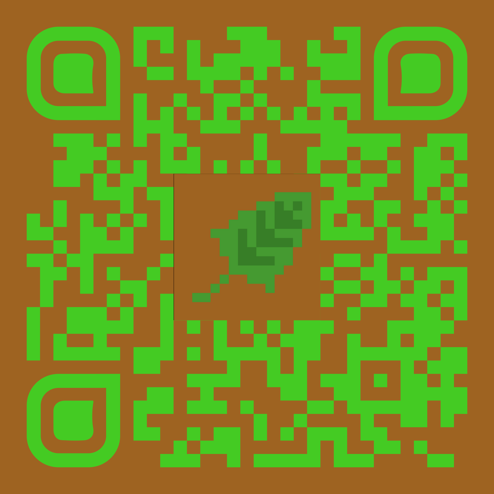

Versi riflessi
Versi riflessi
Versi riflessi
Versi riflessi nasce per condividere le poesie che ho scritto. Spero che a qualcuno possano piacere e che magari possano far riflettere un po'.
L'autore
Mi chiamo Davide, sono un informatico, e di tanto in tanto mi diletto con qualche passione secondaria come scrivere poesie.
Contattami
Se ti va, puoi lasciare un messaggio, una riflessione o un saluto.
Puoi scrivermi a: contact@versiriflessi.net
Condividi
Puoi condividere attraverso il codice
QR:
